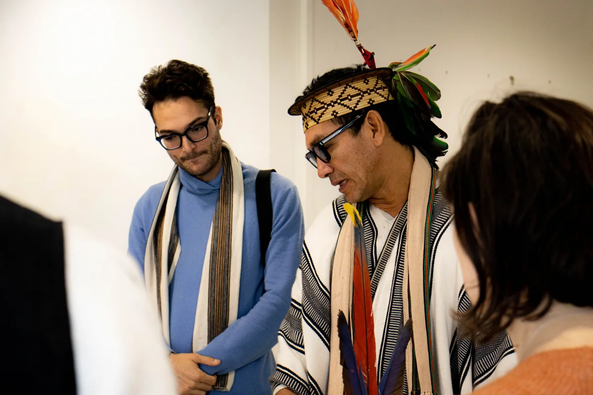
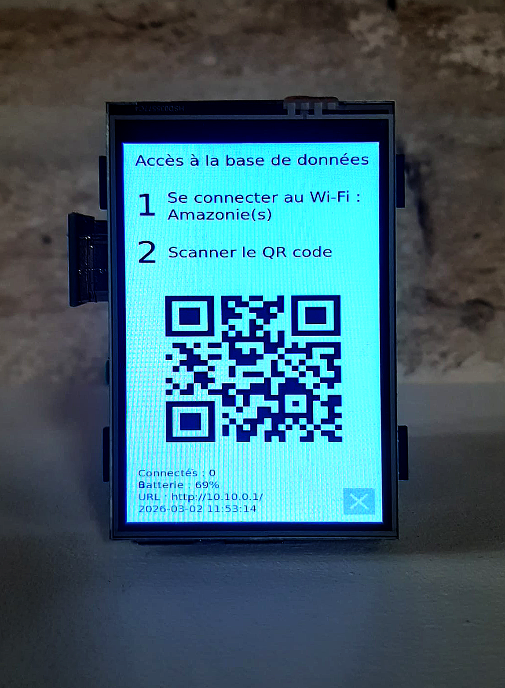
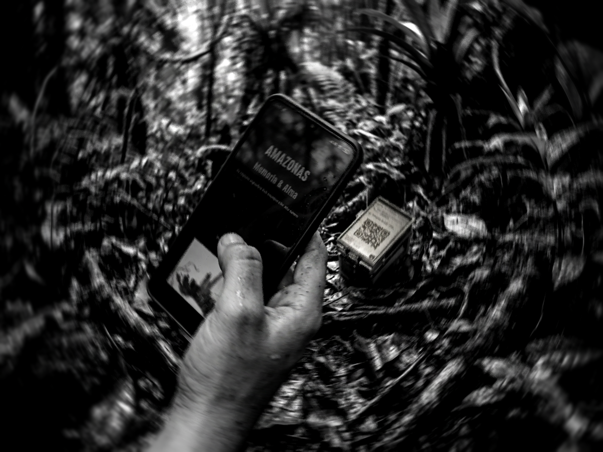
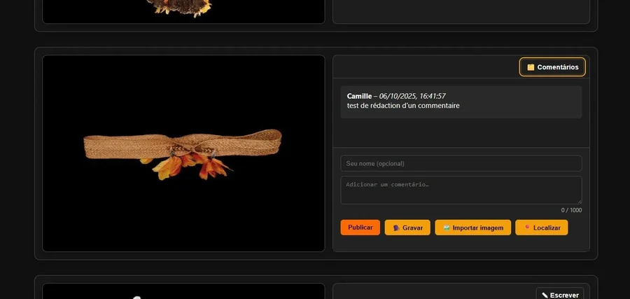
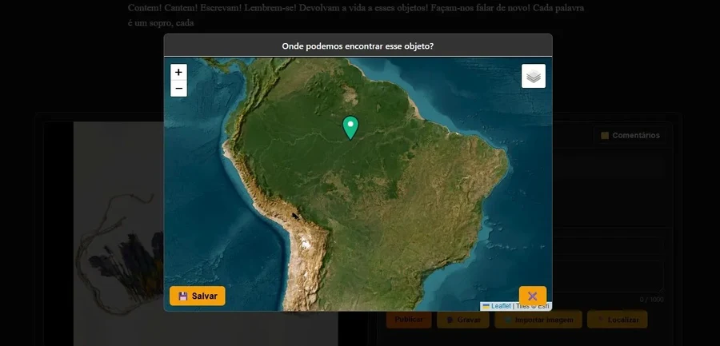

Projet de recherche — ESAA Avignon — By Victor Mulé
Bidule 1.0 Amazonie(s)
Base de données sauvage, nomade et autonome — un espace conçu pour restituer regard et parole aux peuples autochtones dépossédés de leurs artefacts culturels.

Amazonie(s)
— ESAA Avignon
Coordonné par Léa Le Bricomte et Camille Benecchi, le projet de recherche Amazonie(s) s'adosse à la pédagogie singulière de la conservation-restauration à l'École supérieure d'art d'Avignon.
Il interroge : que se passe-t-il lorsque des artistes investissent les collections de provenance coloniale ? Que signifie conserver un objet totalement coupé de sa culture, de son milieu, de ses usages d'origine, sans plus de lien avec les communautés qui l'ont créé ?
La méthode de travail se fonde sur la rencontre avec des représentant·es de communautés autochtones d'Amazonie brésilienne — peuples Surui, Guarani et Ashaninka — avec lesquels des partenariats ont été noués depuis 2022. Benki Piyâko, leader et chamane du peuple Ashaninka, est l'une de ces figures centrales du projet.
esaavignon.eu/amazoniesUne solution
de la taille d'un
poing fermé
Le Bidule est une borne autonome. Il tient dans la main ou dans un sac à dos. Il fonctionne sans Internet ni infrastructure. Il crée un réseau Wi-Fi local, accessible sur un périmètre restreint.
On s'y connecte avec son téléphone ou son ordinateur. Pas de téléchargement d'application, pas besoin de créer un compte, anonymat possible. La base de données propose une liste d'images d'artefacts, dépouillées de toute attribution ou métadonnée, principalement issues des collections du Quai Branly – Jacques Chirac, ainsi que des ateliers de l'ESAA.
Elle fonctionne comme un micro-réseau social centré sur les artefacts culturels. Elle ne distingue pas la parole d'un spécialiste de celle d'un profane. La philosophie du projet est simple : un commentaire, même trivial, peut avoir de la valeur.

Bidule — Accès à la base de données
Se connecter au Wi-Fi : Amazonie(s) — Scanner le QR code
Vers une restitution
de la Documentation
Des millions d'objets spoliés, issus de peuples colonisés, longtemps empêchés de transmettre leurs savoir-faire. À qui profite aujourd'hui la mémoire de ces objets ? Maintenus dans leurs belles cages de verre. En les faisant parler uniquement dans notre langue, nous en perdons le sens. Pourtant, une mémoire vivante existe encore, capable d'en hériter.
Les communautés qui ont créé ces objets n'y ont généralement pas accès — ni physiquement, ni économiquement, ni symboliquement. Le Bidule crée un espace de parole souverain, sans condition d'entrée.
Aucune donnée ne quitte la borne. Pas de cloud, pas de serveur distant, pas d'entreprise tierce. La base, les fichiers audio, les images, les localisations — tout reste dans les mains de ceux qui les produisent.
Conçu pour les zones sans connexion, les appareils anciens, sans formation préalable. Réseau ouvert, aucun téléchargement, aucun compte. Le portail s'ouvre automatiquement dès la connexion Wi-Fi.
De nombreuses langues sont aujourd'hui menacées de disparition. Les détenteurs de savoirs vieillissent, et avec leur disparition, des pans entiers de mémoire risquent de se perdre. Un enregistrement audio, même bref, peut constituer une ressource précieuse.
La borne n'a pas de lieu fixe. Elle peut être déployée dans des contextes variés : un musée, une forêt tropicale, un désert, une école. La mémoire ne se limite pas à un espace institutionnel.
Les contributions — textes, enregistrements, images, localisations géographiques — constituent une contre-archive, construite par les premiers concernés, dans leurs langues, selon leurs logiques de mémoire propres.
Technologie
décoloniale ?
Il y a quelque chose de paradoxal à utiliser le numérique pour rendre justice à des peuples que la modernité occidentale a tenté, sinon d'effacer, du moins d'aliéner.
Bidule n'est pas la start-up nation. Il ne vient pas avec un écran géant ni des serveurs en Californie. Il ne produit ni croissance économique ni plein emploi. Le cœur de l'appareil fait la taille d'une carte de crédit. L'entièreté du système tient sur une carte SD. La technologie est réduite à son strict nécessaire, sans superflu.
C'est un projet libre et open source, pensé pour une maintenance simple. Chaque partie est démontable et remplaçable à moindre coût. Tout peut être reprogrammé, réadapté selon les besoins.
Internet est une infrastructure inégalement distribuée. Les régions amazoniennes les plus reculées, là où vivent les communautés les moins assimilées, sont aussi les moins connectées. Si certaines communautés autochtones se sont approprié des technologies comme le smartphone ou l'ordinateur, en partie comme moyen de lutte et de reconnaissance, elles restent dépendantes des réseaux.
Ce que Bidule
peut faire
La base de données est accessible depuis n'importe quel appareil connecté au réseau Wi-Fi local — Android, iOS, Windows — sans connexion Internet, sans téléchargement, sans inscription. Aucune identification n'est requise. L'anonymat est respecté par défaut.
Le visiteur peut associer à chaque artefact une photographie ou une image issue de son propre appareil. Document de famille, objet similaire conservé au village, comparaison visuelle, preuve iconographique — tout support figuratif est accepté. L'image est compressée localement avant dépôt, sans transfert vers un serveur externe.
Chaque artefact peut recevoir des annotations écrites dans toute langue et tout système graphique. Le champ est libre, sans formulaire structuré ni taxonomie imposée — le visiteur écrit ce qu'il reconnaît, ce qu'il sait, ce qu'il ressent.
Le dispositif permet l'enregistrement audio directement depuis le microphone du téléphone, ou l'import d'un fichier sonore existant. Pour une documentation qui résiste à une hégémonie de l'écriture : chants, récits oraux, nominations dans les langues d'origine.
Une carte interactive de l'Amazonie et du Brésil permet au visiteur de déposer un marqueur indiquant une origine, un territoire, un lieu de mémoire associé à l'artefact. Ces données constituent une cartographie participative construite par les détenteurs du savoir.
Les contributions sont diffusées instantanément à l'ensemble des appareils connectés au réseau local, via un protocole SSE (Server-Sent Events). La base de données se constitue collectivement, en direct, à la manière d'un espace de parole partagé.
Chaque contributeur conserve la maîtrise de ses apports. Un identifiant personnel, généré localement et stocké sur son propre appareil, lui permet de modifier ou supprimer à tout moment ses annotations, enregistrements et images. Aucune donnée ne transite vers un serveur externe.
Bidule, en quelques chiffres

stockés sur Bidule
sur batterie
hors ligne
du dispositif
simultanés
audios stockables
Le Bidule, en détail
Composants
Compatibilité OS — portail captif


Aperçu de la
base de données
L'application tourne en local sur Bidule, mais une version en ligne est accessible depuis n'importe quel navigateur.
Elle permet de se faire une idée concrète du dispositif — de son interface, de ses fonctionnalités — avant tout déploiement terrain.
Accéder à la base de donnéesLa version en ligne est un miroir de ce qui tourne sur Bidule. En conditions de déploiement terrain, la borne fonctionne entièrement hors-ligne.